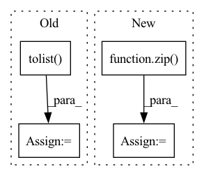

Pattern ID :33613
Before Change
index = self._check_and_convert(index)
labels = self.labels[index]
index = set(index.tolist() )
batch_index, batch_labels = [], []
for cluster in range(self.n_cluster):
nodes = set(self.cluster_member[cluster])After Change
batch_mask.append(mini_mask)
batch_labels.append(mini_labels)
batch_data = tuple(zip( batch_features, batch_adj, batch_mask) )
with self.device:
sequence = ClusterMiniBatchSequence(batch_data, batch_labels)
return sequenceIn pattern: SUPERPATTERN
Frequency: 3
Non-data size: 4
Instances Fragment ID: 96603862
Project Name: edisonleeeee/graphgallery
Commit Name: 6d453bba5f625a27587472fe0496f5456b8a767b
Time: 2020-03-15
Author: cnljt@outlook.com
File Name: nn/models/clustergcn.py
M Class Name: ClusterGCN
N Class Name: ClusterGCN
M Method Name: train_sequence(2)
N Method Name: train_sequence(2)
M Parent Class: SupervisedModel
N Parent Class: SupervisedModel
M File Name: nn/models/clustergcn.py
N File Name: nn/models/clustergcn.py
M Start Line: 102
M End Line: 113
N Start Line: 106
N End Line: 122
Before Change
super().predict(index)
index = self._check_and_convert(index)
order_dict = {i: order for order, i in enumerate(index)}
index = set(index.tolist() )
batch_index, orders = [], []
for cluster in range(self.n_cluster):
nodes = set(self.cluster_member[cluster])After Change
batch_mask.append(mini_mask)
orders.append([order_dict[n] for n in batch_nodes])
batch_data = tuple(zip( batch_features, batch_adj, batch_mask) )
logit = np.zeros((index.size, self.n_classes), dtype="float32")
with self.device: Fragment ID: 96603867
Project Name: edisonleeeee/graphgallery
Commit Name: 6d453bba5f625a27587472fe0496f5456b8a767b
Time: 2020-03-15
Author: cnljt@outlook.com
File Name: nn/models/clustergcn.py
M Class Name: ClusterGCN
N Class Name: ClusterGCN
M Method Name: predict(2)
N Method Name: predict(2)
M Parent Class: SupervisedModel
N Parent Class: SupervisedModel
M File Name: nn/models/clustergcn.py
N File Name: nn/models/clustergcn.py
M Start Line: 77
M End Line: 99
N Start Line: 77
N End Line: 102
Before Change
self.rfe_feature_rank=selector.ranking_
df= pd.DataFrame(list(zip(self.feature_names, self.rfe_feature_rank.tolist())), columns=["Feature", "Rank"])
best_features_scores=df.sort_values(by=["Rank"], ascending=True)[:num_features]
best_features_names= best_features_scores.Feature.tolist()
best_features_table=self.feature_table[best_features_names+[self.label_column]]
return best_features_scores, best_features_names, best_features_table
After Change
self.selector.fit(self.train_features, self.train_labels)
self.rfe_feature_rank=self.selector.ranking_
df= pd.DataFrame(list(zip(self.feature_names, self.rfe_feature_rank.tolist())), columns=["Feature", "Rank"])
best_features_names= [x for x,v in list(zip( G.feature_names, G.selector.support_.tolist()) ) if v==True]
best_features_scores=df.sort_values(by=["Rank"], ascending=True)
best_features_table=self.feature_table[best_features_names+[self.label_column]]
return best_features_scores, best_features_names, best_features_table Fragment ID: 96603865
Project Name: radtorch/radtorch
Commit Name: a4dccc68cb4935fe0222e31d045079d0523ea640
Time: 2020-04-11
Author: elbanan@users.noreply.github.com
File Name: radtorch/test.py
M Class Name: Feature_selection
N Class Name: Feature_selection
M Method Name: rfe(3)
N Method Name: rfe(4)
M Parent Class: Classifier
N Parent Class: Classifier
M File Name: radtorch/test.py
N File Name: radtorch/test.py
M Start Line: 171
M End Line: 179
N Start Line: 170
N End Line: 175